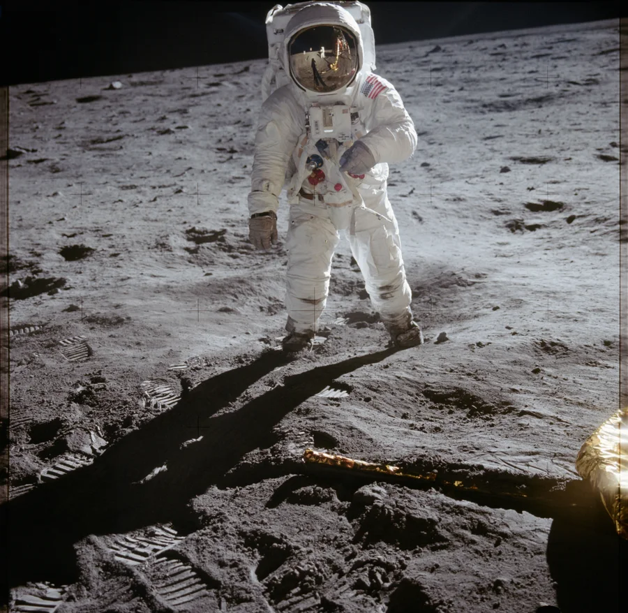

American History · Chapter lesson
New frontiers, shared responsibilities
Read a short illustrated account, examine primary sources, and discuss the evidence.
1969–today
New frontiers, shared responsibilities
Apollo 11 landed humans on the Moon on July 20, 1969. Engineers, mathematicians, programmers, technicians, and many other workers made that achievement possible. Today, Americans continue to debate how to protect rights, care for their communities, and use science and technology responsibly. Citizenship includes learning from evidence, listening, and taking part.
Discuss: What responsibilities come with a powerful new technology?
NASA: Apollo Lunar Surface Journal →